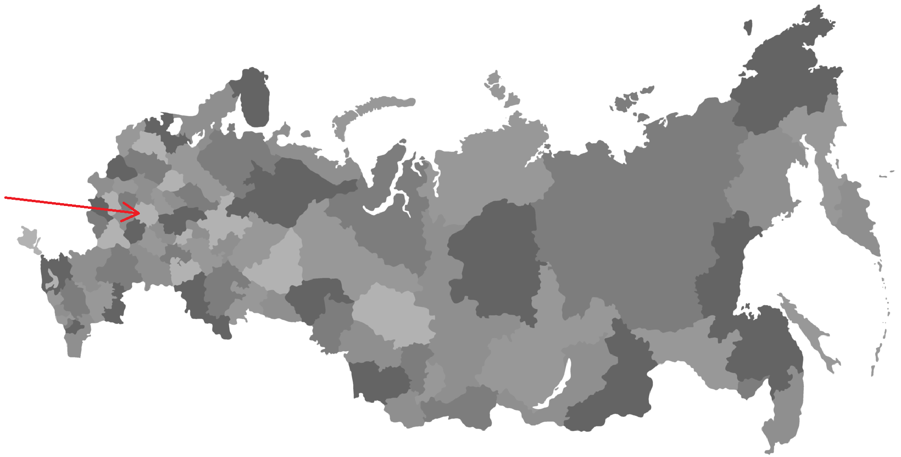
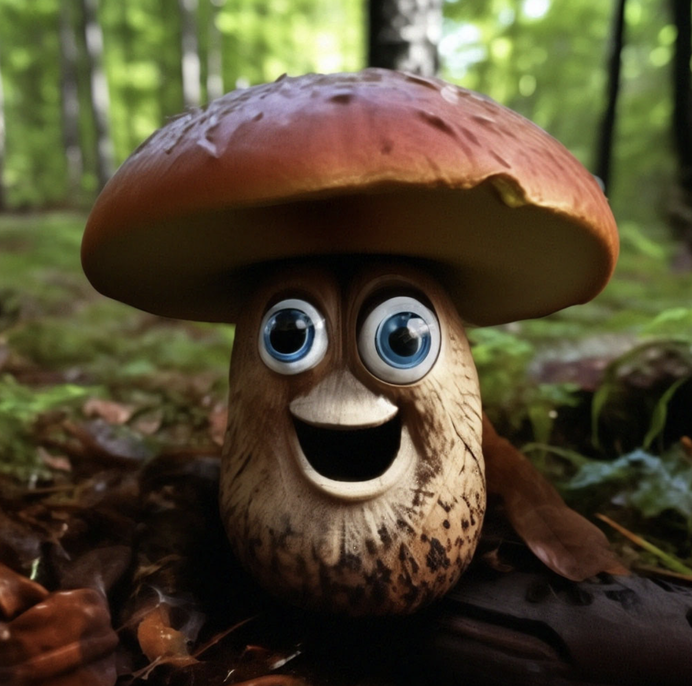
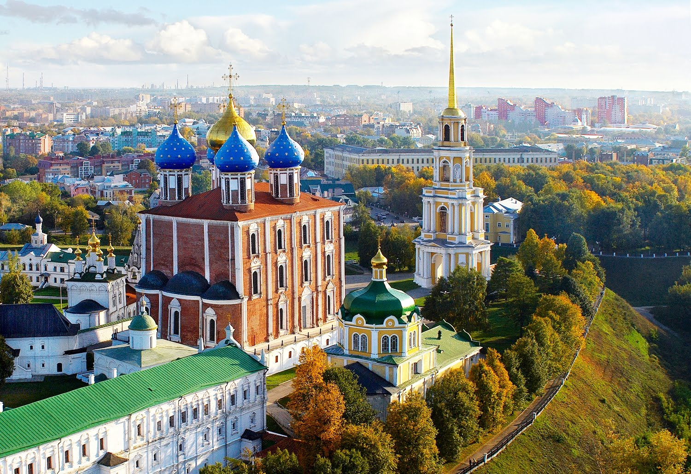
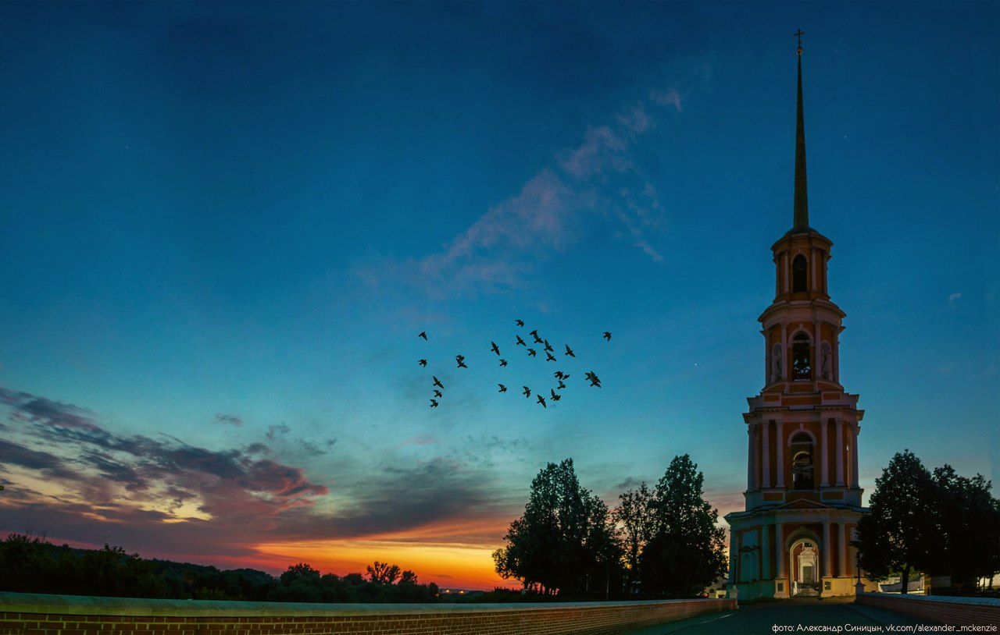

Где я живу?

Рязанская область — это субъект Российской Федерации в европейской части России, входит в состав Центрального федерального округа. В Рязанской области 33 городских населённых пункта, среди которых выделяются двенадцать городов. Административным центром Рязанской области является город Рязань: в нем я и живу.

А еще у нас [𝜸]рибы с [𝜸]лазами! Их [ja]д[a]ть, а они [𝜸]л[a]д[a]ть! В моей области невероятно интересный диалект: все самые сложные типы яканья, фрикативный г и много (в сравнении с севером) живых деревень с живыми диалектными носителями! Я уже давно говорю всем своим лингводрузьям, что экспедиции в Рязанскую область срочно нужны и в большом количестве! У меня уже был однажды опыт северной экспедиции в Архангельскую область (мы ездили с классом в пинежские говоры), так что для меня было бы очень интересно поопрашивать своих земляков (тем более, у меня здесь много родственников и знакомых: нас бы точно не приняли за аферистов). Представьте, как здорово было бы опрашивать свою собственную бабушку! Еще у нас в городе (только у нас!) есть целая сеть самых лучших на свете пекарен "Бонтэ". В них всегда играет легкая французская музыка, классный кофе, чистота и уют. Я очень скучаю по этой пекарне, в московских все совсем не так. Когда приезжаю домой на выходные (это, кстати, еще один огромный плюс жить в Рязани: и не шумная Москва, и ехать до дома всего 3 часа), обязательно захожу туда, чтобы насладиться выпечкой и атмосферой!А теперь немного красивых рязанских фото

